Wir haben unser Geschäft 1996 in der Kirchstraße errichtet. Bis heute ist viel Wasser durch die Spree geflossen, aber es gibt Dinge, die sich nicht verändert haben.
Ob neue modische Brille, die Anpassung von Contactlinsen oder kompetente Augenglasbestimmung, wir beraten Sie gerne, jederzeit persönlich und umfassend.
Unser Name steht für Qualität. In jede Anfertigung fließt Ihre Individualität und unser Wissen ein. Deshalb fertigen wir in eigener Meisterwerkstatt. Das Ergebnis ist, dass Sie sich mit Ihrer neuen Brille und Contactlinsen rundum wohlfühlen. Damit das so bleibt, sind wir selbstverständlich auch danach mit unserem Service für Sie da.
Wir freuen uns auf Ihren Besuch.
Reinhard Kornatz
staatl. gepr. Augenoptikermeister
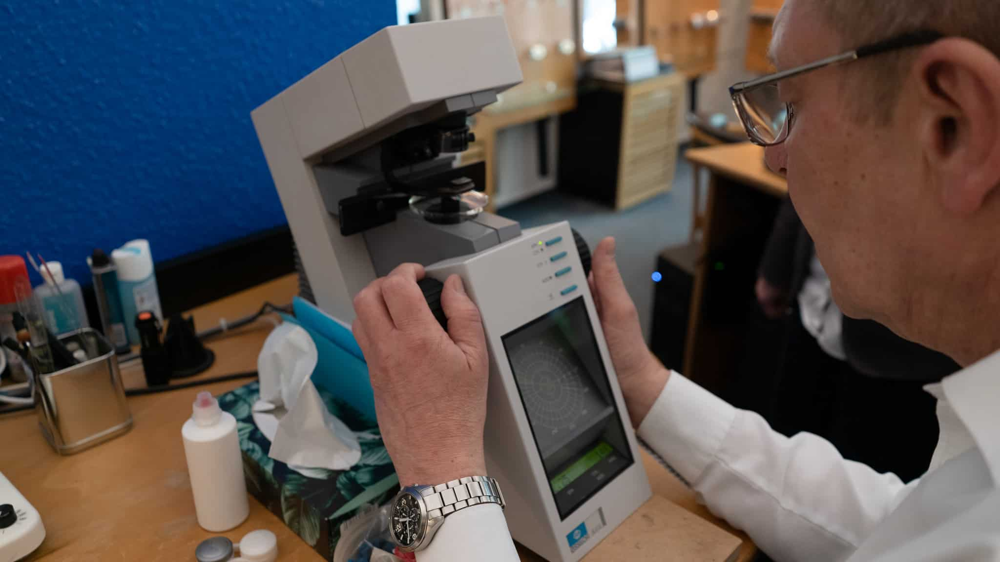
Es gibt runde Brillen, Naturhornbrillen, dünne Brillen, farbige Brillen, Unisexbrillen, eckige Brillen, Doublébrillen, dicke Brillen, historische Brillen, Titanbrillen, Faltbrillen, Kinderbrillen, Sportbrillen, Goldbrillen, minimalistische Brillen, Zelluloseacetatbrillen, Designer Brillen, W-Steg Brillen, Halbbrillen, Vintagebrillen, Unikatsbrillen, Nylonbrillen, Gebrauchsbrillen, Edelstahlbrillen, exclusive Brillen, Schießbrillen, Vollrandbrillen, Wechselbrillen, Teilrandbrillen, Randlosbrillen...
und es gibt uns. Wir beraten Sie gerne.
Mit unserem Videoberatungssystem können Sie aus den gleichzeitig dargestellten Vorschlägen Ihren Favoriten auswählen und die Wirkung Ihrer zukünftigen Brille vergleichen.
Sie wünschen mehr Individualität? Wir lassen Ihre ganz persönliche Brille „Made in Germany“ in Zelluloseacetat, 750er Gold oder Naturhorn anfertigen.
Viel Spaß bei der Auswahl Ihrer neuen Brille!
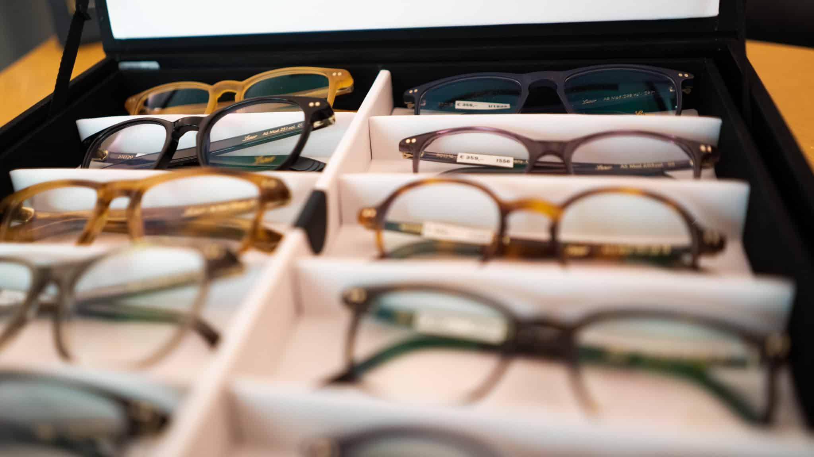
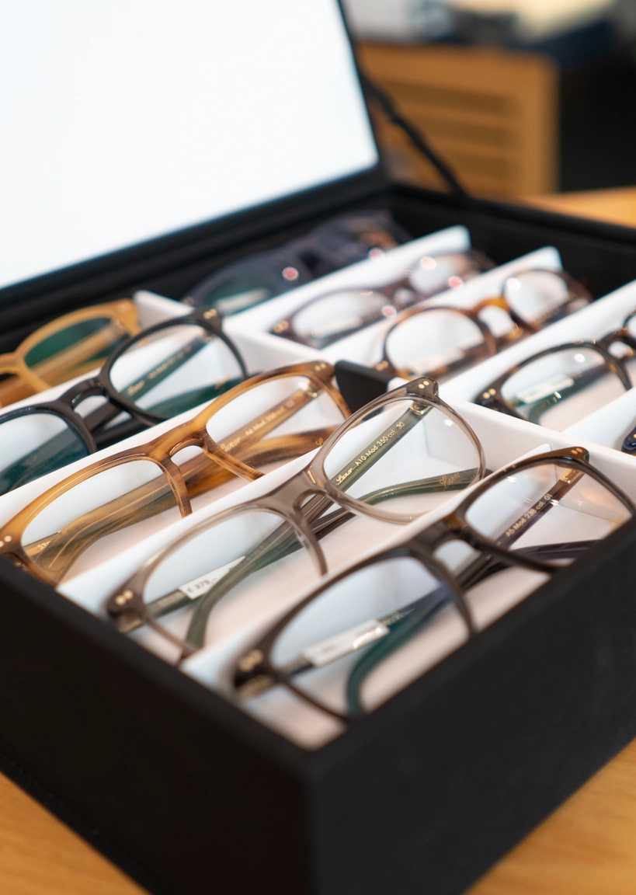
Wir arbeiten ausschließlich mit weltweit führenden Herstellern von Brillengläsern, Contactlinsen und exklusiven Brillenfassungen zusammen, um Ihnen höchste optische Präzision zu garantieren.
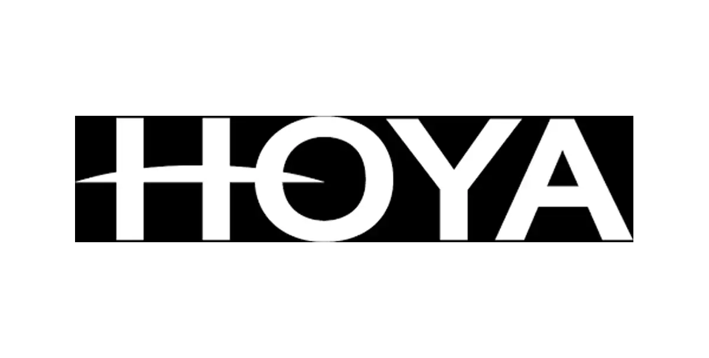
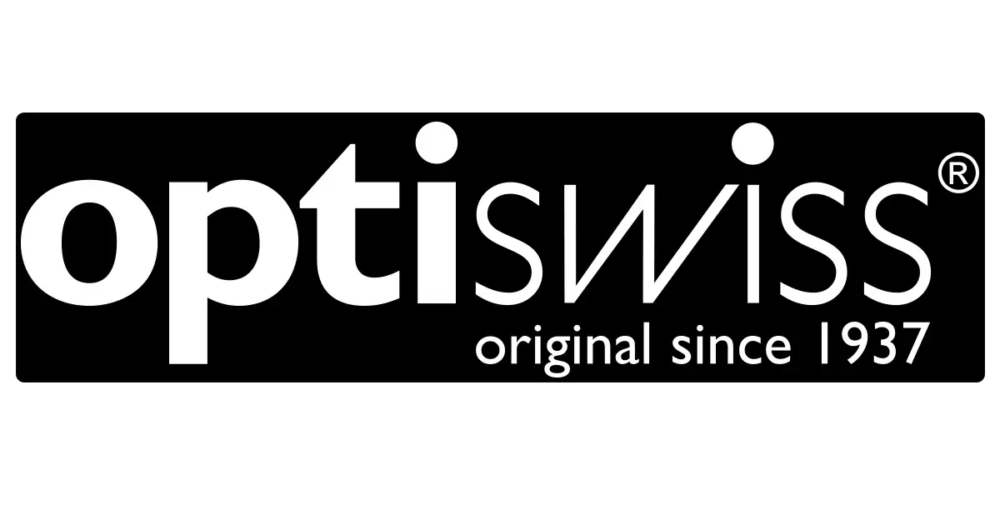
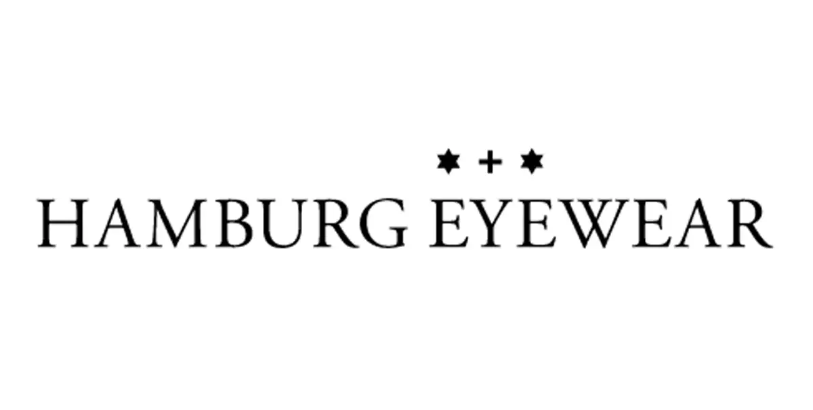
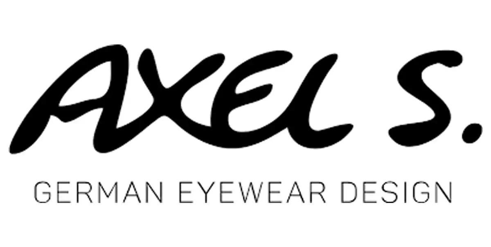
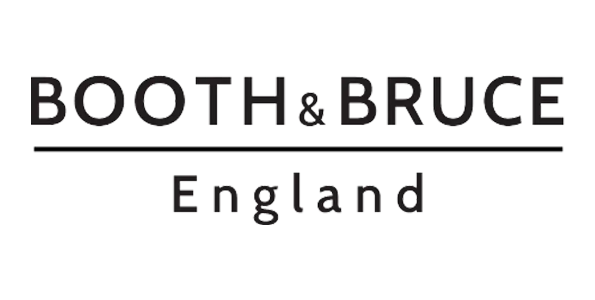
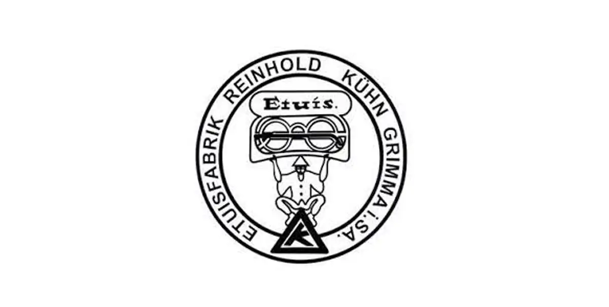
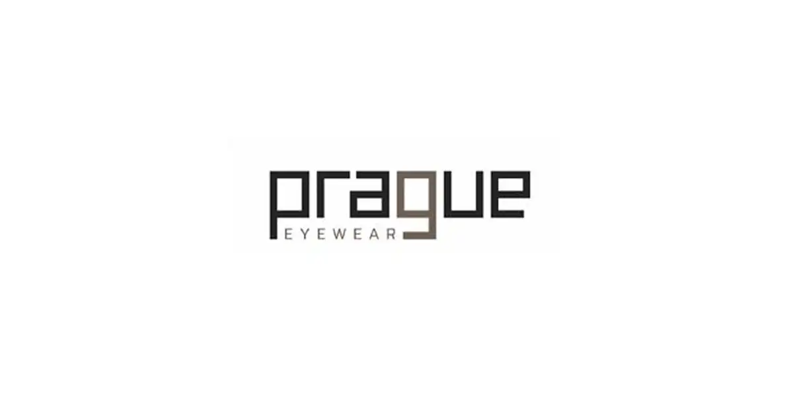
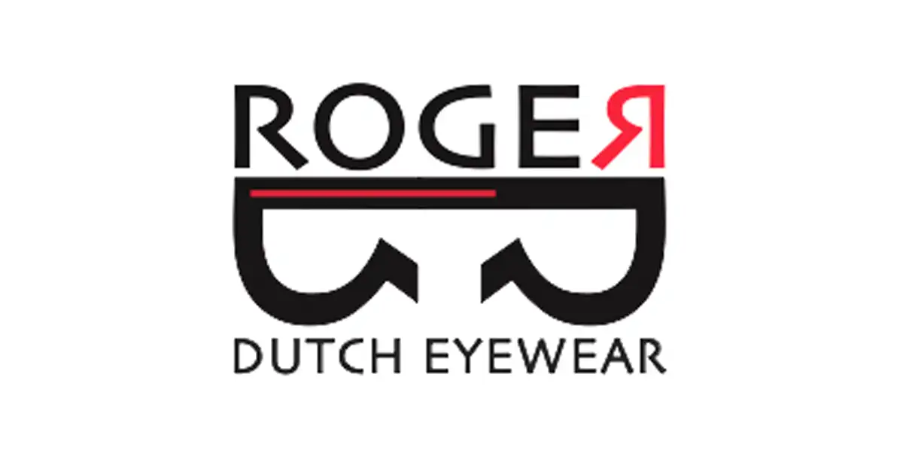
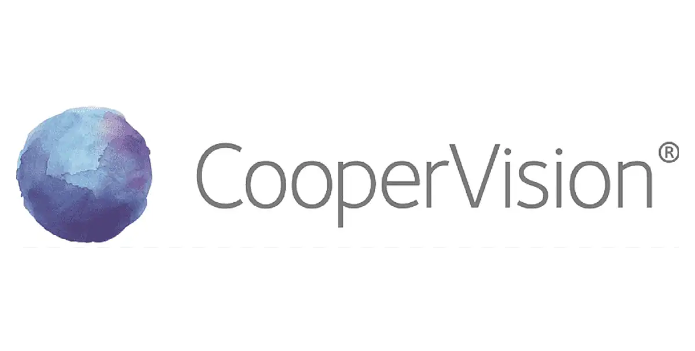
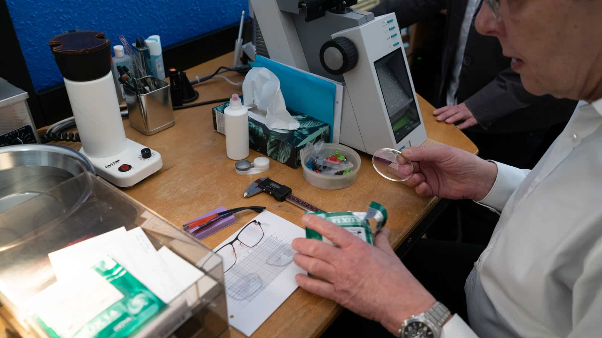
Präzision vor Ihren Augen.
Was wäre die schönste Brille ohne entsprechende Brillengläser? Leicht und schlank sollen die Gläser sein. Den nahezu unsichtbaren Alleskönnern sieht man ihre Leistungsfähigkeit und den darin steckenden HighTech nicht sofort an.
Ausgeklügelte Berechnungen für die besten Abbildungseigenschaften sorgen für perfekte Sehqualität. In Verbindung mit mikrometergenauen Fertigungsverfahren werden hochmoderne Brillengläser hergestellt.
Die Wahl des optimal geeigneten Materials ist entscheidend für das ästhetische Aussehen, die Haltbarkeit, das Gewicht... bis hin zu den leichten Pflegeeigenschaften. Schön wenn Sie sich für Qualitätsgläser entscheiden, denn dann haben Sie rundum Freude an der guten Sicht.
Die aus der Brillenglasstärke, Fassungsgröße und Brillenglasmaterial resultierende Glasdicke wird von uns in einer Computersimulation berechnet und optimiert. Auf Basis dieser Daten werden bei unseren Zulieferern die Rohgläser angefertigt und in unserer Meisterwerkstatt präzise eingearbeitet.
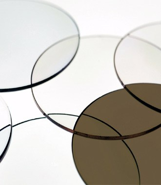
Ist Ihr Arm beim Lesen zu kurz?
Gleitsichtgläser stellen die beste Lösung dar. Der Vorteil multifokaler Gläser liegt auf der Hand: Es gibt für jede Entfernung eine passende Stärke. Es kann übergangslos jedes Objekt erkannt werden. Zudem sind diese Gläser kosmetisch ansprechend und fertigungsbedingt dünner als entsprechende Bifokal- oder Lesebrillengläser.
Unsere Produktpalette deckt jeden Anspruch ab. Es gibt Ausführungen, die für den Fern-/ Nahbereich, den Arbeitsplatz und den Lesebereich optimiert sind.
Im Vorgespräch, und bei der sorgfältigen Augenglasbestimmung, wird zusammen mit Ihnen der abzudeckende Bedarf ermittelt. Nur so kann die richtige Wahl des optimal Ihren Bedürfnissen entsprechenden Gleitsichttyps getroffen werden.
Die präzise Ermittlung aller Einschleifdaten und die genaue Einarbeitung Ihrer Gläser in unserer Werkstatt stellt den spontanen Seherfolg sicher. Unsere regelmäßige Teilnahme an Produktschulungen sichert eine gleichbleibend hohe Qualität auf neuestem Stand.
Wir brauchen das Sonnenlicht zum Leben. Dennoch wird das Auge dabei auch schädlicher UV-Strahlung ausgesetzt. Gute Sonnenbrillengläser schützen zu 100%.
Je nach Einsatzbereich sind unterschiedliche Farben und Absorptionsgrade empfehlenswert. Im Citybereich ist eine geringere Tönung ausreichend. An der See, im Gebirge und im Schnee ist eine bis zu >90%ige Tönung erforderlich. Jeder Mensch ist unterschiedlich lichtempfindlich. Deshalb empfehlen wir Ihnen unseren speziellen Sehtest, mit dem der erforderliche Lichtschutz ermittelt werden kann.
Auch bei den Tönungsfarben gibt es erhebliche Unterschiede. Puristen bevorzugen Grau. Andere fühlen sich mit kontrasteigernden Gläsern erst richtig wohl. Wir haben eine breit gefächerte Auswahl von Mustergläsern zur Probe vorrätig. Darüber hinaus werden die vorhandenen Möglichkeiten mit Kantenfiltern und Polarisationsgläsern weiter abgerundet.
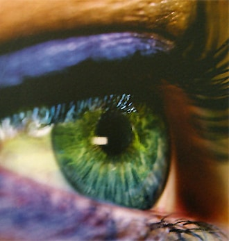
Wer lieber Contactlinsen als Brille trägt oder zwischendurch im Freizeitbereich und beim Sport mehr Freiheit braucht, trifft bei uns auf offene Ohren.
Wir können Ihnen formstabile und weiche Contactlinsen anpassen. Dabei stehen Ihnen verschiedene Systeme zur Auswahl.
Die optimale Verträglichkeit von Contactlinsen hängt von der richtigen Wahl und der sorgfältigen Anpassung ab. Wir nehmen uns deshalb bei der Beratung und Beantwortung Ihrer Fragen Zeit. Ebenso bringen wir Ihnen die Handhabung und Pflege bei.
Sie erhalten bei uns Contactlinsen und Pflegemittel aller namhafter Hersteller. Genießen Sie die unbeschwerte Freiheit beim Sport und in der Freizeit.
Professionelle Augenanalyse und Refraktion vom staatlich geprüften Augenoptikermeister R. Kornatz. Erleben Sie modernste Messtechnik in Berlin-Moabit.
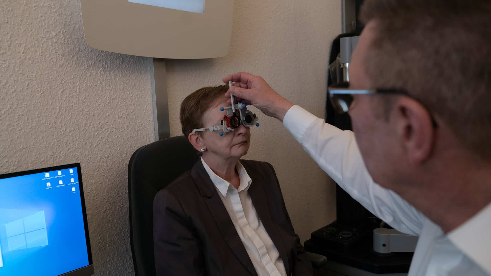
5-Minuten-Test zur Orientierung
Gutes Sehen ist Lebensqualität und dient der Sicherheit. Ihr Wohlbefinden und Ihre Leistungsfähigkeit werden erheblich von den Augen beeinflusst. Eine schleichende Verringerung der Sehleistung wird oft erst dann erkannt, wenn die Symptome nicht mehr geleugnet werden können (z.B. Konzentrationsmangel, Abgespanntheit, verzögerte Reaktion).
Deshalb führen wir mit Ihnen einen Sehcheck durch. Völlig unkompliziert wird eine Bestandsaufnahme gemacht und in Ihrem Sehpass dokumentiert. Dieser kostenlose Test dauert keine 5 Minuten und gibt Ihnen Sicherheit.
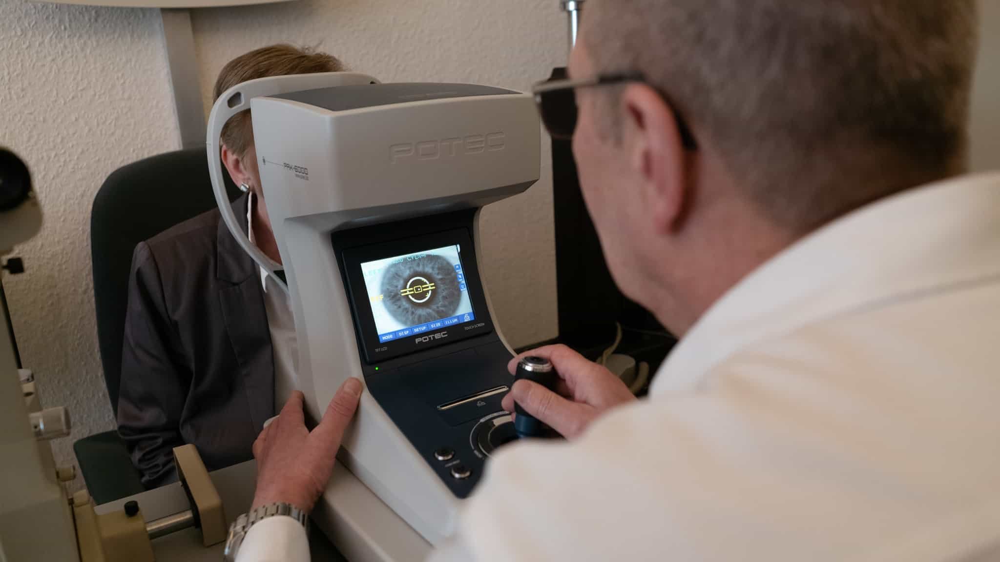
Wir prüfen Ihr Sehen, nicht nur Ihre Augen
Unsere Augenglasbestimmung beginnt stets mit einem Gespräch über Ihre Sehforderungen und den Einsatzbereich der neuen Brille oder Contactlinsen. Die Einzelprüfung Ihrer Augen stellt die bestmögliche Korrektion sicher. Doch erst durch die Abstimmung beider Augen wird ein optimales, anstrengungsfreies Sehen ermöglicht.
Mit speziellen Tests des „bon Multivisus ®“ bestimmen wir nicht nur Ihre Brillenglasstärke, sondern überprüfen das einwandfreie Zusammenspiel beider Augen (binokulares Sehen), Ihre Naheinstellfähigkeit, das Farbsehen und die dynamische Sehleistung. Mit der „ZEISS ® Präzisionsmessbrille“ können Sie die ermittelten Werte sofort real ausprobieren.
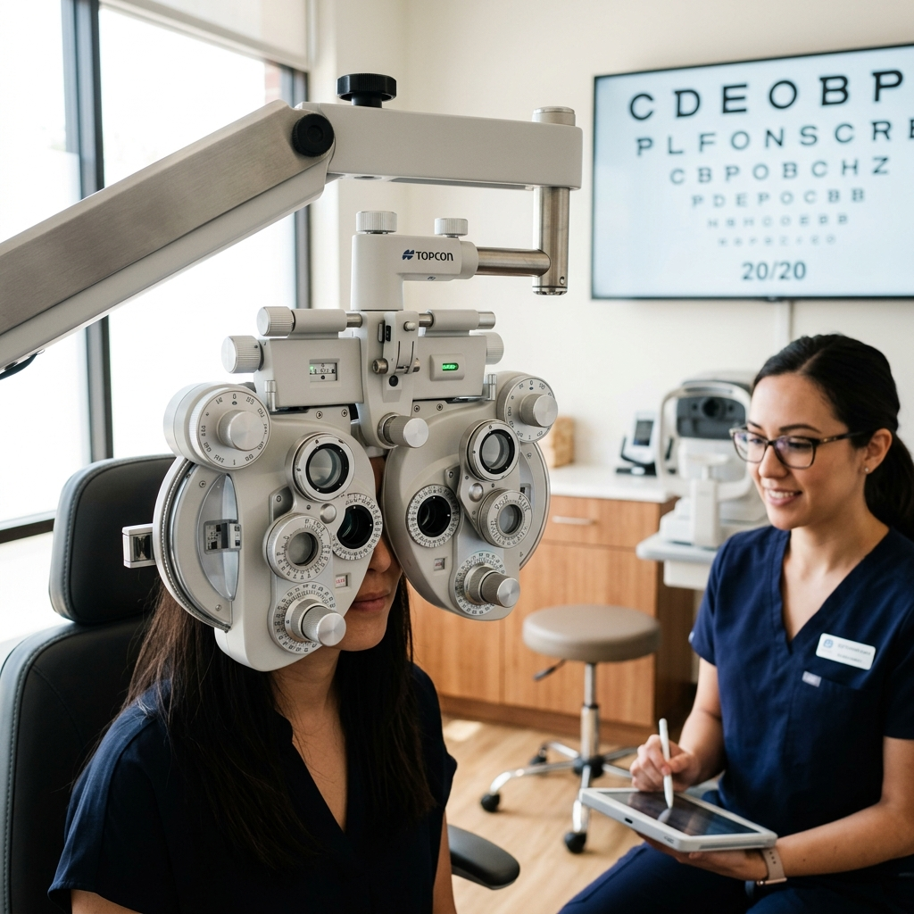
Amtliche Bescheinigung für Fahrschüler
Als amtlich anerkannte Sehteststelle führen wir den Sehtest für Führerscheinbewerber/innen der Klassen A, A1, A2, B, BE, AM, L und T durch. Bitte bringen Sie Ihre ggf. vorhandene Brille oder Contactlinsen mit.
Zur Aushändigung der Sehtestbescheinigung ist die Vorlage eines gültigen Personalausweises oder Reisepasses gesetzlich erforderlich. Die amtliche Gebühr beträgt EUR 6,45. Falls Sie vorab unverbindlich Ihre Sehleistung prüfen möchten, empfehlen wir Ihnen unseren kostenlosen 5-Minuten-Seh-Check.